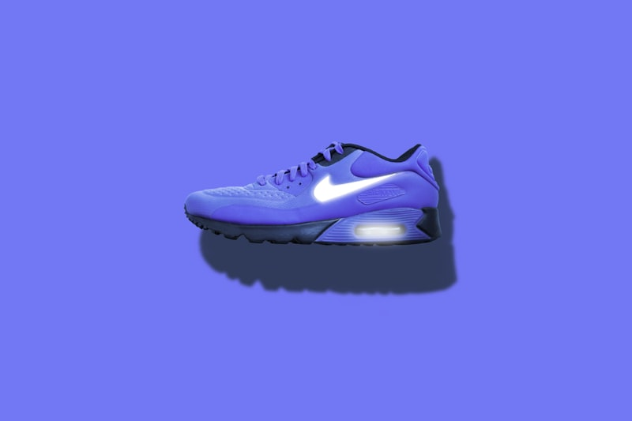
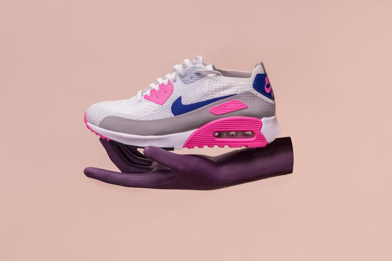
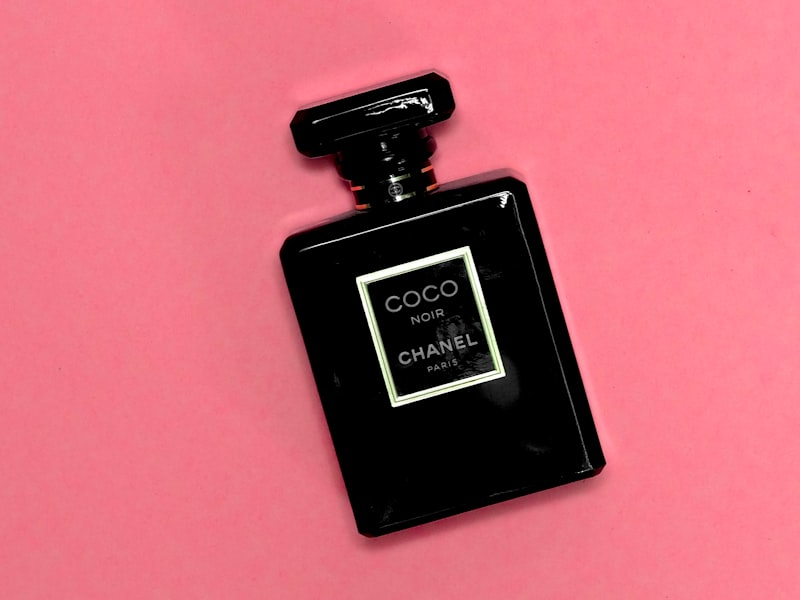

[ CARRY ARCHIVE // DISPATCHES ]
Artisan carry textiles & leathercraft logs.
A structured collection of technical articles on organic linen weaving, plant indigo dye chemistry, strap drop calculations, and abrasion-resistant linings.

Weaving Densities: Handbag Warp Calibration
How we analyze cotton canvas fiber counts and calculate loom shuttle speeds to weave durable, fluid study handbags.
Explore More
Vat Dyeing: Indigo Fermentation & Purse Colors
Analyzing pH fermentation levels and oxygen reactions to build lasting, chemical-free indigo blue colors on book covers.
Explore More
Space Ergonomics: Bag Lining & Placement
How pockets alignment margins, bag interior clearances, and fabric friction coefficients control user carry comfort.
Explore More
Cotton Spinning: Long Bast Fibers & Tensile Breaks
Sourcing organic flax plants, retting harvests, and spinning long bast strands to maintain table cloth strength.
Explore More
Hemstitched Edges: Thread Pulls & Seam Security
Analyzing double welt seams, edge thread densities, and pull thresholds on heavy tablecloth borders.
Explore MoreAbrasion Limits: Table Linen Wear & Wash Cycles
How we test textured linen weaves against heavy friction wheels to verify wash durability thresholds.
Explore More
Dye Chemistry: Plant Fermentations & Color Fixers
Understanding natural mordants, tea leaf tannin baths, and indigo sediment fermentations to fix colors without chemicals.
Explore More
Insulation Loft: Cotton-Linen Blends & Hot Plates
Measuring heat flow speeds, fiber loft thickness, and thermal values of table runner underlays under hot cast irons.
Explore MoreEdge Durability: Hand-Stitched Napkin Miters
Why we analyze saddle stitching on gather seams and check double-fold miter corners to prevent corner unravels.
Explore More
Wrinkle Recovery: Fabric Silicone & Flat Ironing
Understanding hot flat iron pressures, natural flax cell structures, and silicone finish limits to preserve smooth finishes.
Explore More
UV Colorfastness: Tea-dyed Linens & Sunlight Fading
Testing nitrogen color bonds, sunlight simulator testing hours, and color fade margins under high elevation sun rays.
Explore More
Napkin Folds: Compartment Packing & Crease Limits
How Belgian linen napkins fold flat inside travel wicker baskets, protecting borders without permanent crease damage.
Explore More